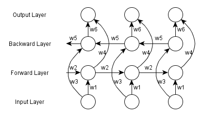

For many sequence labelling tasks it is beneficial to be able to access both past and future timesteps. However, unidirectional RNNs can only proceed through time from past to future or future to past. This could potentially be improved by adding a time window of context around the timestep in question (i.e. look at timesteps $(t-n, \ldots, t-1, t, t+1, \ldots, t+n)$). However, fixed context windows can be undesirable as the window size requires tuning, and may be different for individual sequences and potentially for individual timesteps within a sequence. A more elegant solution is the bidirectional recurrent neural network (BRNN), the basic premise of which is to connect two recurrent neural networks to the same output layer, but have the input presented forwards to one network and backward to the other. An unfolded BRNN can be seen below.
The forward pass for a BRNN is the same as for a RNN, except that the output layer is not updated until both the forward and backward recurrent layers have processed the input sequence. Similarly, the backward pass proceeds the same, except that $\delta$ values for the output layer are fed into the recurrent layers in opposite directions. Being able to proceed backwards through the input sequence can be seen to break causality in tasks where the subsequent sequence elements are causally related to previous ones. In particular, for a task such as forecasting, access to future elements of the sequence is impossible. However, if the inputs are spatial (rather than temporal) or it is reasonable to believe that the whole sequence will be available before an output needs to be produced (e.g. translation, automatic dictation or handwriting recognition), then there is no need to restrict ourselves to following causality (especially if it is not unidirectional, as is the case with protein structure prediction).
Uncited References: